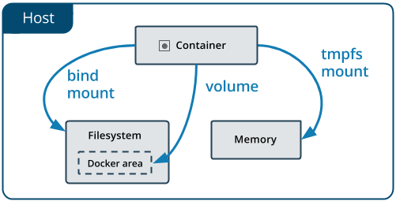

Storage overview¶
Docker 支持三种形式的mount类型，分别是：Volumes, Bind mounts 和 tmpfs.

特别留意: 1. 如果mount一个空的volume到容器中的一个目录，或者文件，这些文件或者目录将被同步复制到空的数据卷中。启动容器的时候指定一个不存在的数据卷，一个空的数据卷建会被创建。 2. 如果mount一个bind mount 类型的数据卷或者非空的 volume 到容器中的一个目录，如果这个目录中已经存在一些文件，那么这些文件在挂载外部数据卷期间将不可见，也不能被修改，除非移除挂载的数据卷。
Volumes¶
Volumes 存储在宿主机器的文件系统上的一块区域，这块区域 (/var/lib/docker/volumes)被Docker管理，非Docker的进程不能修改这块区域。官方推荐的一种存储方式。
典型的用例：
- 在多个正在运行的容器之间共享数据
- When the Docker host is not guaranteed to have a given directory or file structure.
- 远程存储容器的数据，比如云提供商
- 备份，恢复，迁移数据从一个Docker主机到另外一个主机
Bind mounts¶
Bind mounts 可以存储在宿主机器的文件系统上任何位置。非Docker线程可以或者任意一个Docker 容器可以随意修改。一般推荐在开发的过程中使用这中mount
方式。
典型的用例：
- 宿主机器与容器之间共享配置文件
- 在开发环境宿主机器与容器共享source code，或者build artifacts
- When the file or directory structure of the Docker host is guaranteed to be consistent with the bind mounts the containers require
docker run -dt --name tomcat --mount type=bind,source="$(pwd)"/app,target=/usr/local/tomcat/webapps/app -p 8080:8080 tomcat:7.0-alpine
tmpfs¶
存储在宿主机器的内存中，不会被写入宿主的文件系统。
典型的用例：
- 基于安全考虑或者效率的因素，不希望将数据保存到宿主机器或者容器中
Userful Commands¶
//进入容器的内部查看容器 docker exec -it <container-name> /bin/bash //删除所有正在运行的container docker rm $(docker stop $(docker ps -aq)) //构建镜像 docker build -t <image-name> . //删除none匿名镜像 docker rmi -f $(docker images | grep "none" | awk '{print$3}') //删除以test开头的镜像 docker rmi -f $(docker images | grep "^test" | awk '{print$3}') //删除所有的数据卷 docker volume prune //查看容器的log docker logs -f -t YOUR_CONTAINER_NAME